GALERI
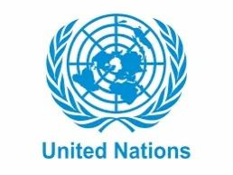
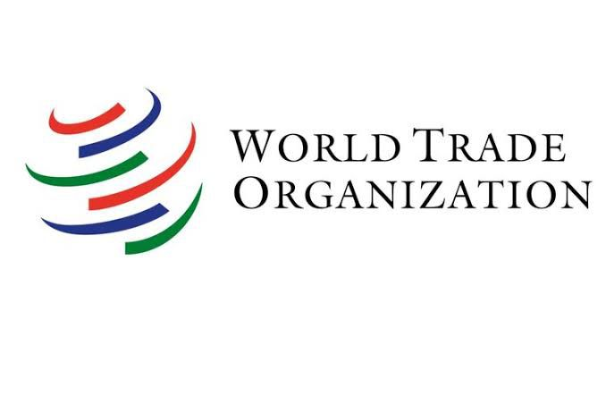
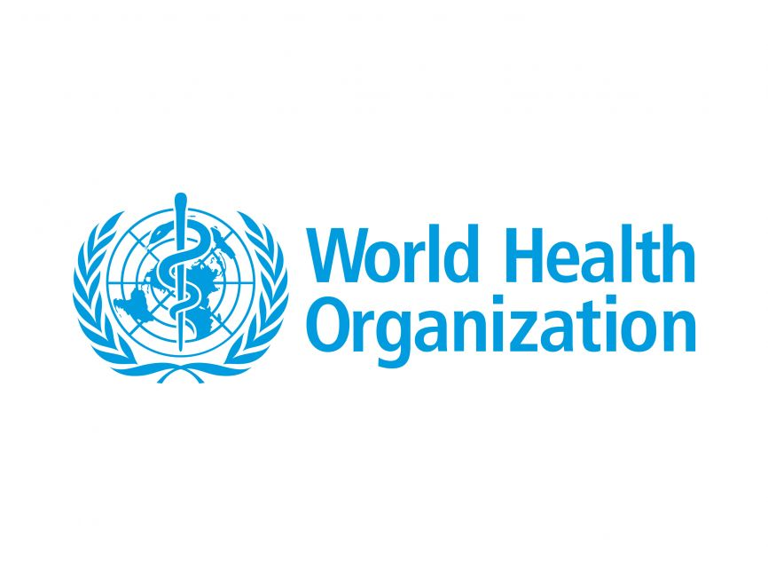
 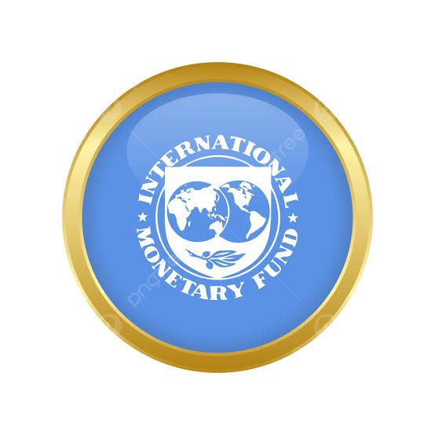
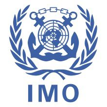
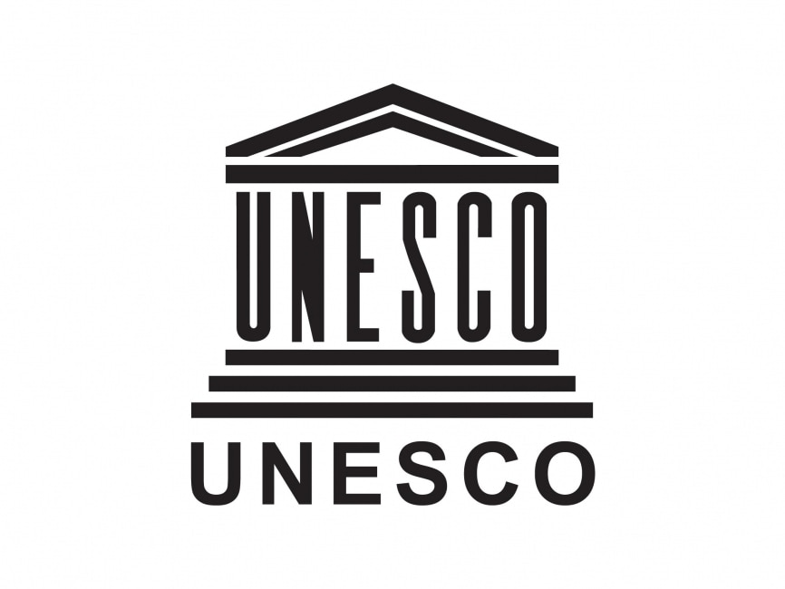
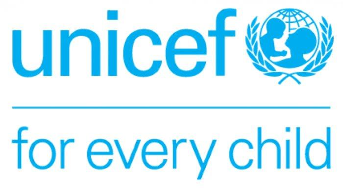
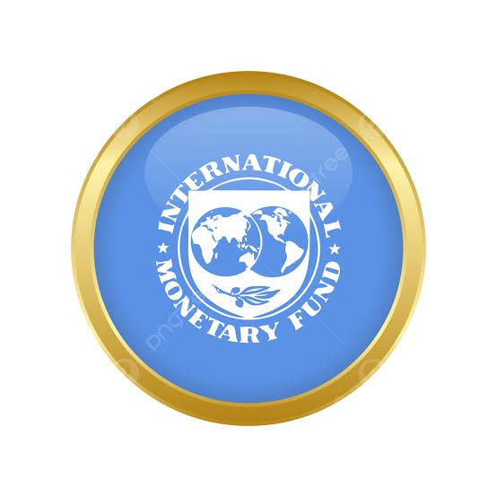
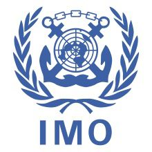
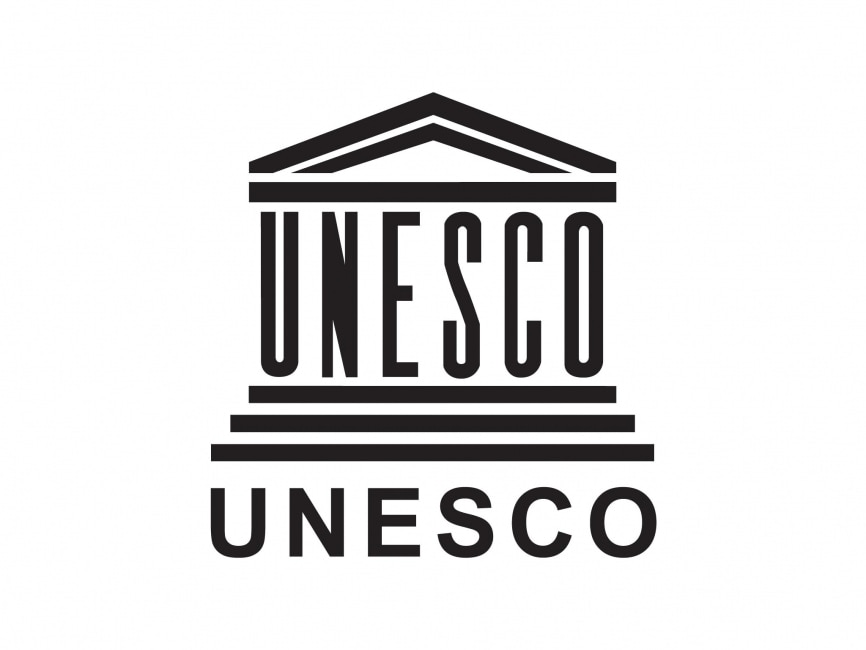
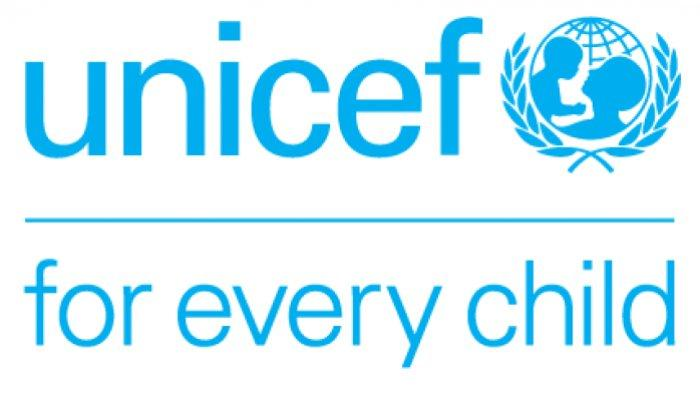
KERJA SAMA MULTILATERAL
PENGERTIAN KERJA SAMA MULTILATERAL
Kerja sama multilateral adalah suatu bentuk kerja sama yang diselenggarakan bangsa-bangsa di dunia tanpa memandang wilayah untuk suatu kepentingan tertentu. Tujuan dari kerja sama multilateral ini adalah menjalin hubungan dengan negara lain tanpa memandang wilayah, mencapai kepentingan bersama dan mengatasi isu-isu global yang kompleks. Berikut ini adalah bentuk kerja sama multilateral di Indonesia :
BENTUK KERJA SAMA MULTILATERAL INDONESIA
Perserikatan Bangsa-Bangsa (PBB)
Perserikatan Bangsa-Bangsa (PBB) adalah organisasi internasional yang didirikan pada 24 Oktober 1945 di San Francisco, California, Amerika. Lembaga ini dibentuk setelah berakhirnya Perang Dunia II untuk mencegah terjadinya konflik serupa. Tujuan lain dibentuknya Perserikatan Bangsa-Bangsa (PBB) adalah untuk mendorong kerja sama internasional. Dalam Perserikatan Bangsa-Bangsa terdapat anak perusahaan yaitu Dewan Keamanan Perserikatan Bangsa-Bangsa. Indonesia pernah menjadi anggota DK PBB 4 kali, pada periode 1973-1974, 1995-1996, 2007-2008, dan 2019-2020. Adapun berbagai lembaga kerja internasional yang dikelompokkan menjadi dua kelompok yaitu:
Lembaga kerja sama yang berada di dalam naungan PBB
World Trade Organization (WTO)
World Health Organization (WHO)
World Bank
International Monetary Fund (IMF)
International Maritime Organization (IMO)
United Nations Educational, Scientific, and Cultural Organization (UNESCO)
United Nations Children’s Fund (UNICEF)
Dan lain lain
Lembaga kerja sama yang berada di luar naungan PBB
Organization of Petroleum Exporting Countries (OPEC)
Organization for Economic Co-operation and Development (OECD)
Intergovernmental Group on Indonesia (IGGI)
Consultative Group for Indonesia (CGI)
North American Free Trade Agreement (NAFTA)
MANFAAT KERJA SAMA MULTILATERAL
Mewujudkan amanat Pembukaan UUD NRI Tahun 1945
Meningkatkan peran kepemimpinan internasional Indonesia
Meningkatkan peranan dan kontribusi Indonesia pada misi pemeliharaan perdamaian
Mendorong kerja sama dalam penyelesaian konflik, terorisme, dan juga pandemi global
Mendorong pertumbuhan ekonomi dan pengentasan kemiskinan